Massas, pães, bolos, snacks, biscoitos e sobremesas sem glúten — de marcas selecionadas. Uma seção inteira do Emporium pensada para quem tem restrição ou sensibilidade.
A nossa linha própria não fabrica versões sem glúten. Por uma razão técnica: não dá para cozinhar produtos com glúten e sem glúten na mesma cozinha sem risco de contaminação cruzada. Por isso, a especialização "sem glúten" não está na nossa fabricação — mas está fortemente presente no Emporium, com curadoria criteriosa.
Massas de arroz, milho, quinoa e outras farinhas sem glúten — de marcas que validamos pelo sabor e qualidade.
Pães com fermentação natural, pães doces, bolos e muffins sem glúten — itens de marcas e produtores selecionados dentro da curadoria do Emporium.
Cookies, biscoitos doces e salgados, brownies, bolos e doces — todos sem glúten, sem gosto artificial.
Granolas, barras proteicas, chips, crackers — opções práticas para o dia a dia.
Massas, pães, biscoitos, snacks e doces sem glúten de marcas que validamos pelo sabor e pela qualidade. Todos são sem glúten — os selos abaixo destacam o que cada um tem de diferente. A disponibilidade varia conforme o que chega de cada produtor.
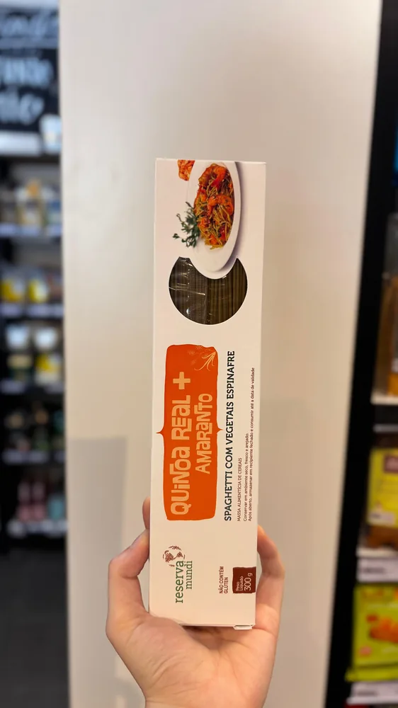
Massa 100% vegetal de quinoa real boliviana e amaranto, com farinha de arroz e espinafre. Sem ovo e sem lactose — os grãos andinos mais nutritivos direto no prato.
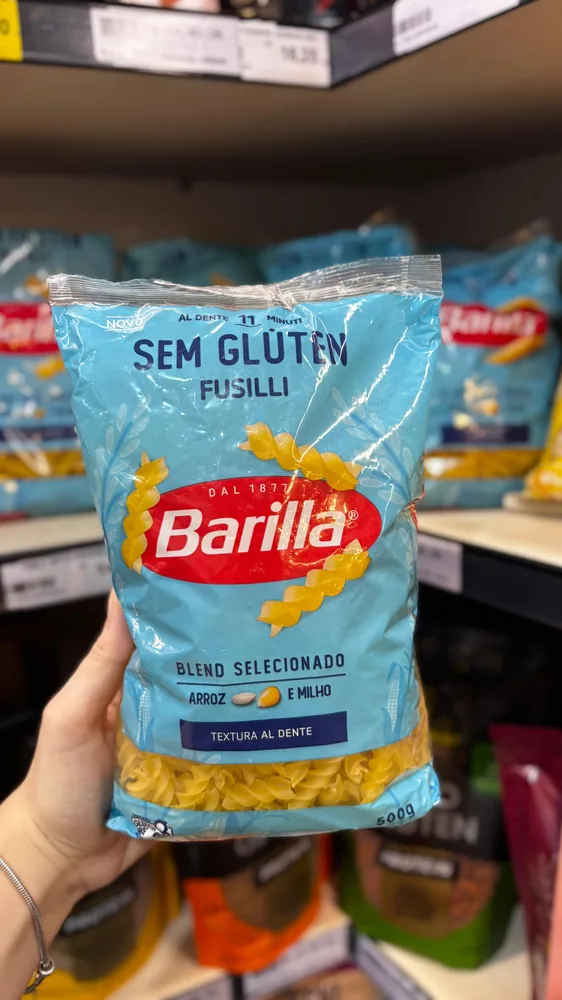
O fusilli sem glúten da Barilla — líder mundial em massas — feito com milho e arroz e produzido no Brasil. Textura e sabor de massa italiana de verdade.
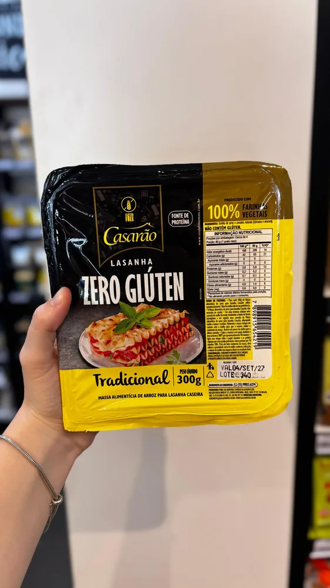
Massa de lasanha à base de farinha de arroz, 100% vegetal e caseira. Sem leite, ovo, soja ou conservantes — pronta para montar a sua lasanha sem abrir mão de nada.
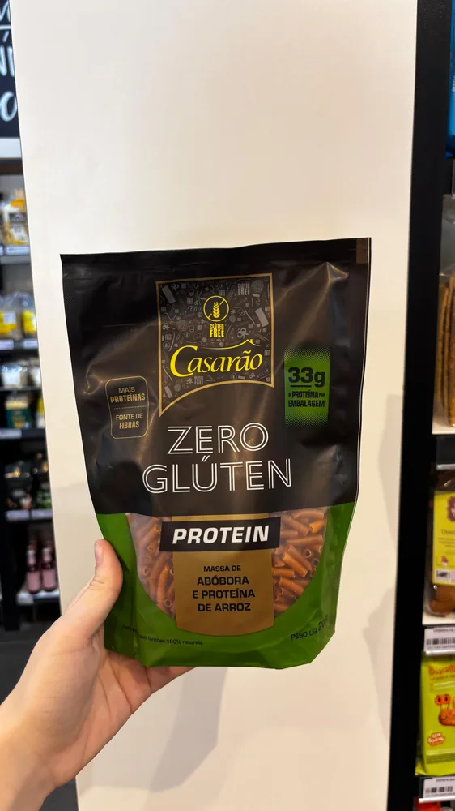
Massa sem glúten enriquecida com abóbora e proteína de arroz. 100% vegetal e livre de alergênicos — mais proteína no prato sem perder a leveza.
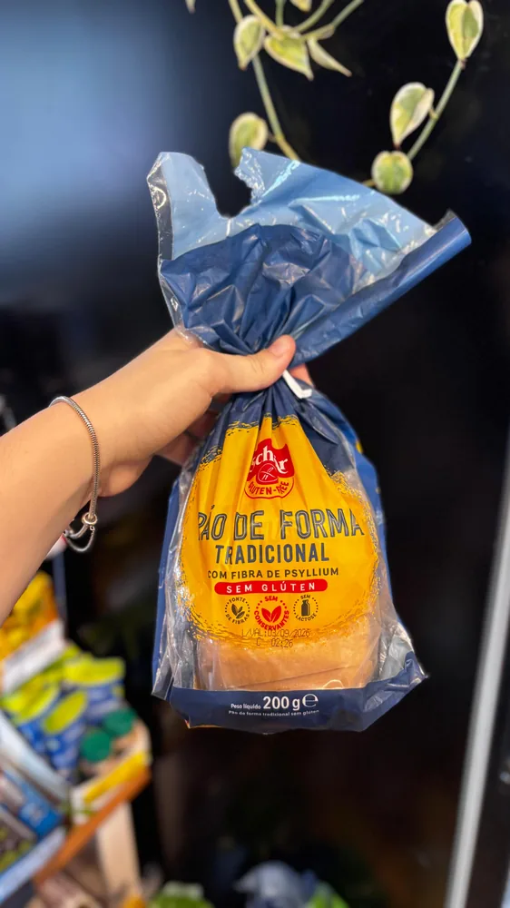
Pão de forma macio da Schär — marca italiana com 35 anos só de sem glúten — com fibra de psyllium. Sem lactose e sem conservantes: o pão do dia a dia, sem perder a maciez.
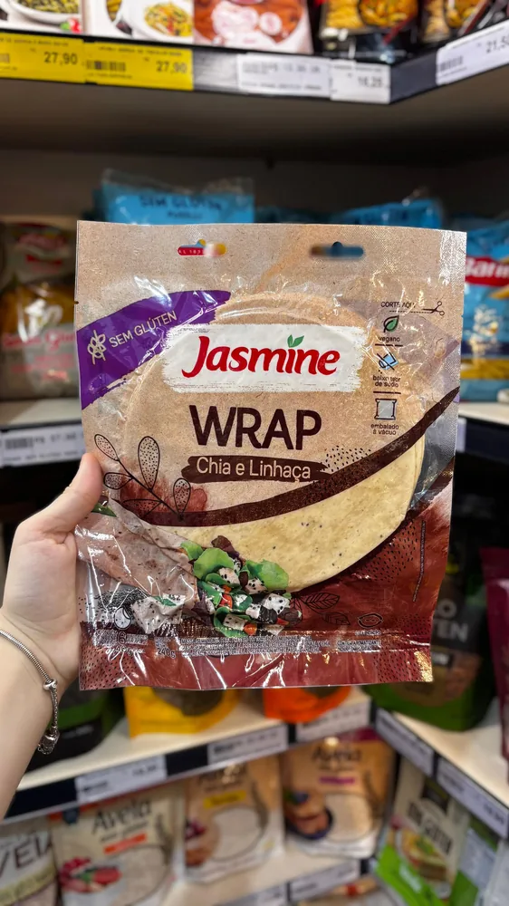
Tortilha tipo wrap da Jasmine, enriquecida com chia e linhaça (fibras e ômegas). Vegana, de baixo sódio e embalada a vácuo — base versátil para wraps, burritos e quesadillas.
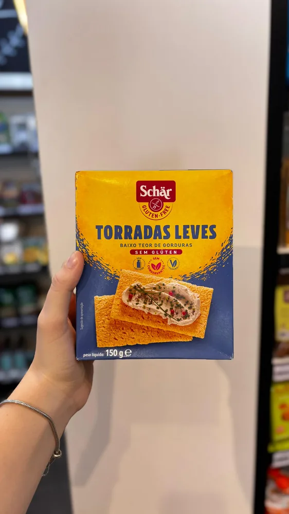
Torradas leves e crocantes da Schär, de baixo teor de gordura. Sem lactose, sem conservantes e veganas — a base perfeita para o café da manhã ou um lanche rápido.
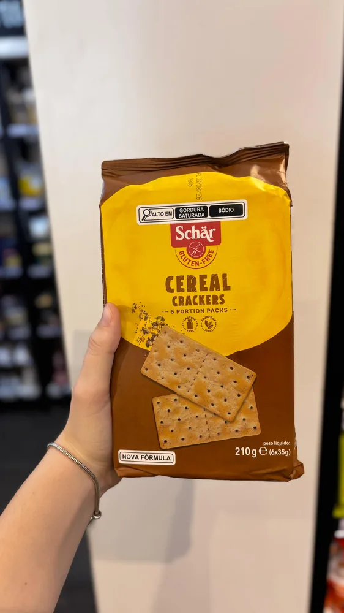
Biscoitos crocantes de cereais da Schär, sem conservantes nem aditivos artificiais e fonte de fibra. Ótimos puros ou com pastas e queijos.
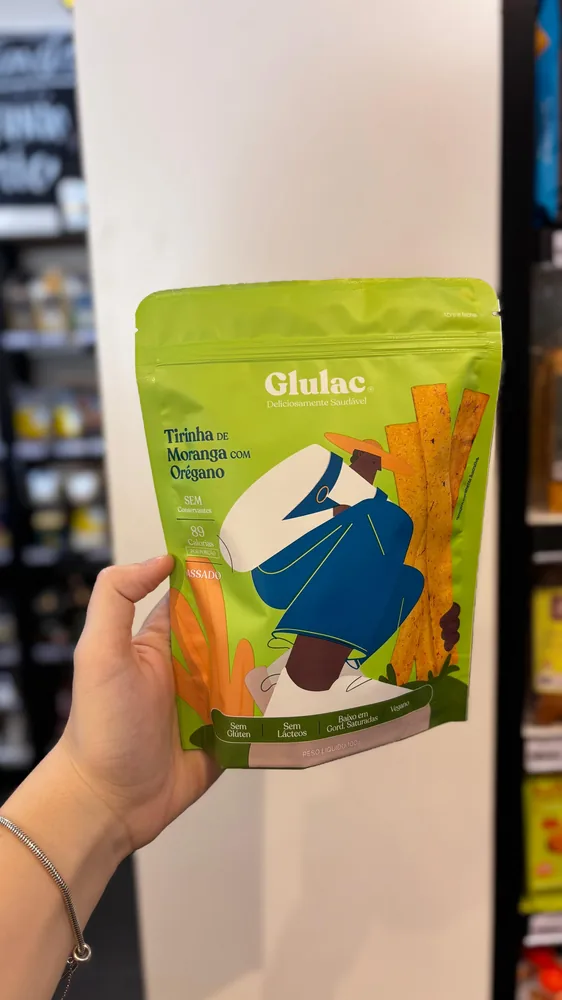
Snack crocante de moranga cabotiá assada (com casca, aproveitamento integral), polvilho, linhaça dourada e psyllium. Vegano, sem açúcar e sem gordura hidrogenada — ótimo puro ou com antepastos.
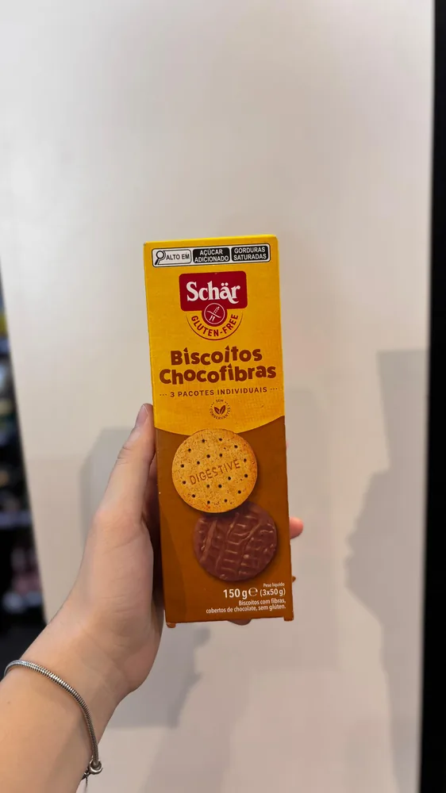
Biscoitos de chocolate com fibras da Schär, sem conservantes. O lanche doce que mata a vontade sem culpa — e sem nenhum aditivo artificial.
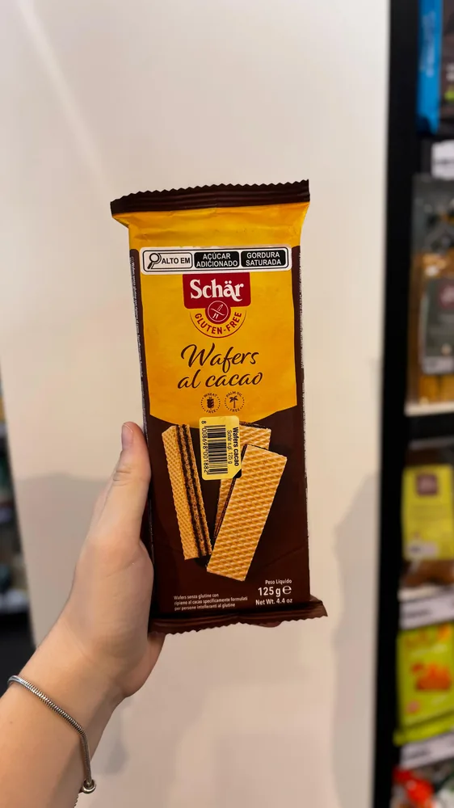
Wafers crocantes recheados de cacau, no capricho italiano da Schär. Sem aditivos artificiais — aquele docinho clássico, agora sem restrição.
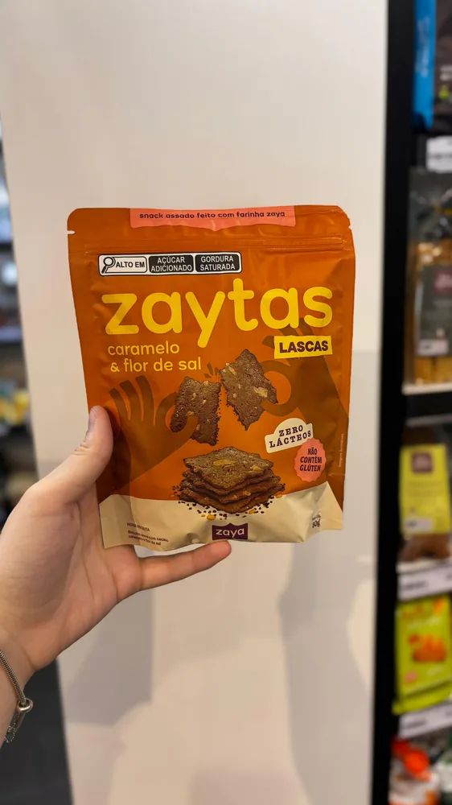
Lascas crocantes de brownie da Zaya, com caramelo e flor de sal. Sem leite, sem soja e sem conservantes — puras por colher ou jogadas sobre sorvete e bolos.
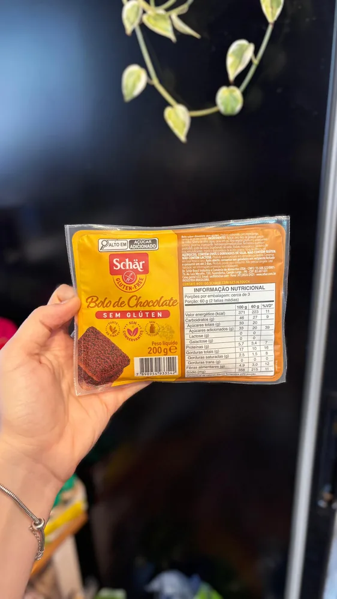
Bolo de chocolate pronto da Schär, fofinho e sem glúten. Fonte de fibras, sem lactose e sem conservantes — sobremesa resolvida sem abrir mão do sabor.